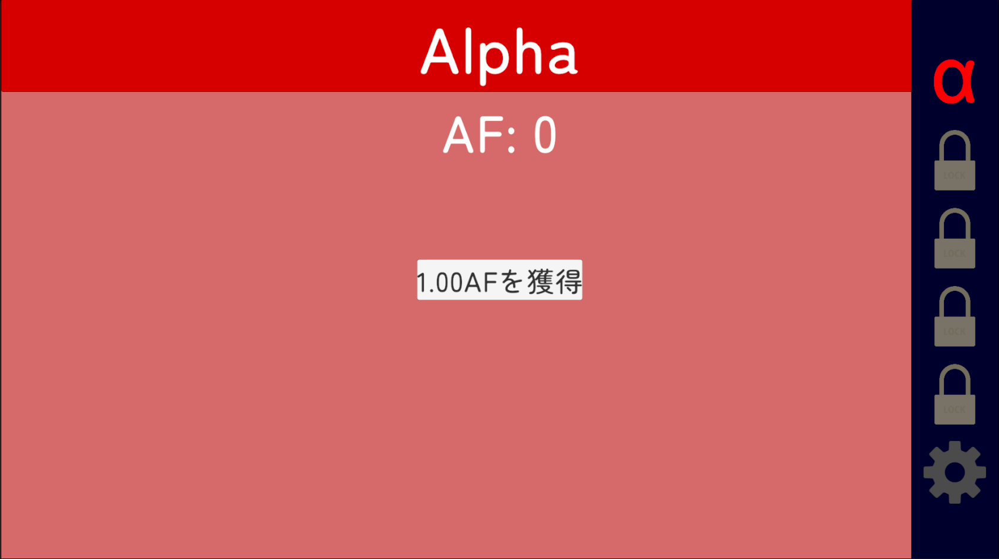
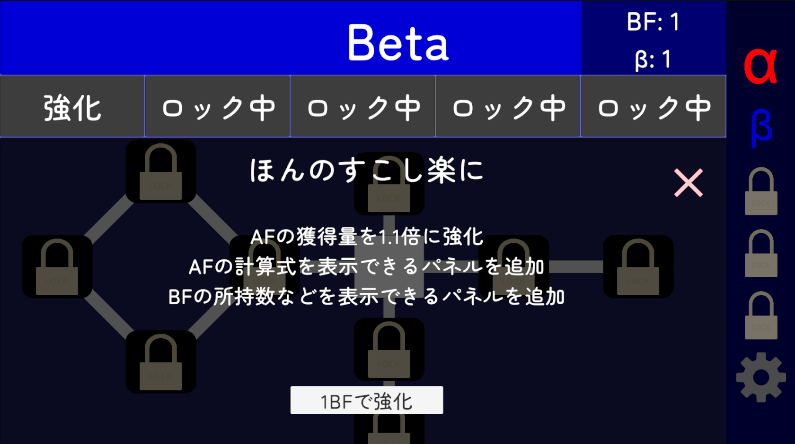
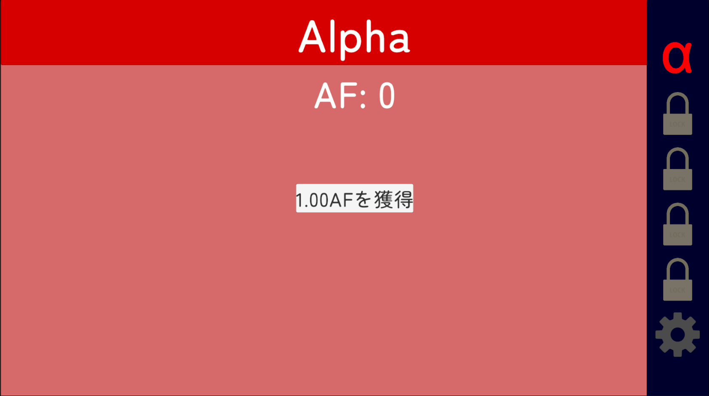
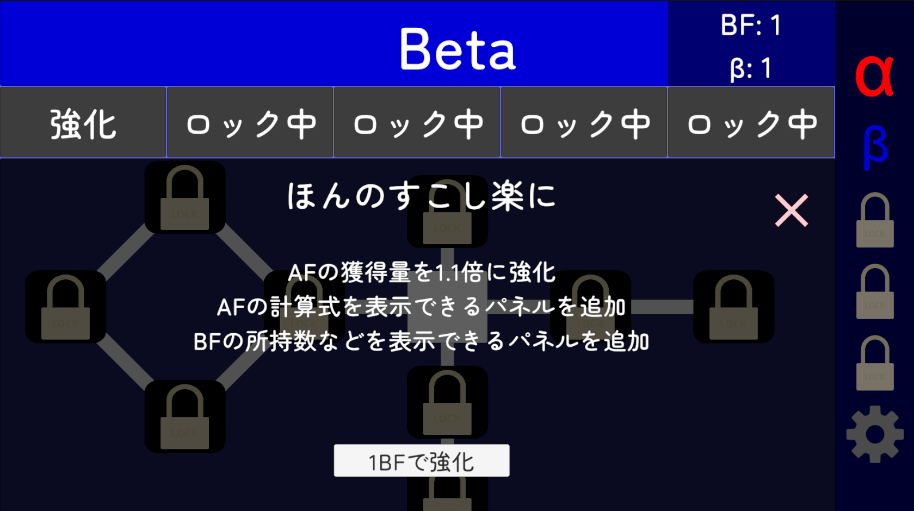

プロジェクト概要
主な特徴
- C#の数値型 (short, int, long など) のオーバーフローをゲーム進行の中心に据えた設計
- オーバーフロー後、別の数値型でスコアを獲得し、さらにその型でのオーバーフローを目指す
- ゲームの進行につれてオーバーフローまでの道のりが短くなるバランス調整
- 凄まじいインフレーションによる爽快なゲーム体験
作品について
Overflow Clickerは、UnityとC#を用いて開発している2Dクリッカーゲームです。 クリッカーゲームとインクリメンタルゲームの要素を組み合わせ、C#の数値型のオーバーフローという仕組みをゲームの核として活用しています。
プレイヤーはクリックやオートクリッカーでスコアを増加させ、数値型の上限に到達するとオーバーフローが発生します。 オーバーフロー後は新たな数値型のスコアを獲得でき、さらにその型でオーバーフローさせることがゲームの目的となります。
ゲームバランスの設計にこだわり、進行するにつれてオーバーフローまでの道のりが短くなるように調整しました。 これにより、凄まじいインフレーションによる爽快感のあるゲーム体験を提供し、プレイヤーに「もう少し先まで進めたい」と感じさせるサイクルを実現しています。
数値型は現在5種類で考えており、sbyte、short、int、long、doubleとしています。 それぞれのステージをAlpha、Beta、Gamma、Delta、Epsilonと命名しており、タブを切り替えることで各ステージの画面を表示できるようにしています。
Alphaを除く各タブ内では、今までに取得したスコアを利用する子タブを複数用意し、次のオーバーフローへの道のりを短くするためのアップグレードを実装していますが、 すべての要素を使わずとも、オーバーフローさせることは可能なバランスに調整しています。
現在はまだ開発途中ですので、ゲームシステムの構築がメインですが、今後はUI/UXの改善、バランス調整などを重ねて、最終的にはUnityroomで公開することを目指しています。
ソースコード紹介
using System.Collections;
using System.Collections.Generic;
using UnityEngine;
public enum BetaUpgradeStatus
{
Locked, // 未開放
Available, // 解放可能
Completed // 解放済み
}
[CreateAssetMenu(fileName = "BetaUpgrade", menuName = "ScriptableObjects/Create Beta Upgrade")]
public class BetaUpgrade : ScriptableObject
{
[Header("強化の情報")]
public int upgradeID; // ユニークなID
public string title; // タイトル
public double needBetaFactor; // 解放に必要なBetaFactorの数
[TextArea]
public string description; // 説明
[Header("前提となる強化")]
public List<BetaUpgrade> preRequiredUpgrade;
// 以下、必要な変数を準備
}解説
BetaUpgrade は、Betaステージにおけるアップグレード（強化）の定義を行うための ScriptableObject です。 各アップグレードの情報（ID、タイトル、必要コスト、説明文）をUnityエディタ上から設定できるようになっています。
BetaUpgradeStatus enum により、各アップグレードの状態を「未開放」「解放可能」「解放済み」の3段階で管理します。 また、preRequiredUpgrade リストにより、アップグレードの前提条件となる他のアップグレードを設定でき、 スキルツリー形式のアンロック構造を実現しています。
using System;
using System.Collections.Generic;
using System.IO;
using Unity.VisualScripting;
using UnityEngine;
using UnityEngine.Rendering;
using System.Linq;
[Serializable]
public class SaveData
{
public double AlphaFactorForCalc;
public double AlphaFactorExp;
public bool IsAlphaOverflowCollapsed;
public double AlphaOverflowCount;
public bool IsArrivedBeta;
public double AllBFGetInThisTerm;
public double BetaFactorForCalc;
public double BetaNum;
public double BetaFactorExp;
public double BetaFactorUsedInAmplification;
public bool IsBetaOverflowCollapsed;
public double BetaOverflowCount;
public bool IsUpgrade0Completed;
public bool IsUpgrade5Completed;
public bool IsUpgrade6Completed;
public bool IsUpgrade7Completed;
public bool IsUpgrade8Completed;
public bool IsUpgrade9Completed;
public bool IsUpgrade10Completed;
public bool IsUpgrade11Completed;
public int LatestCompletedMissionID;
public double BetaBankAmount;
public double BetaBankInterestRate;
public SaveData()
{
AlphaFactorForCalc = 0.0;
AlphaOverflowCount = 0.0;
AlphaFactorExp = 1.0;
AllBFGetInThisTerm = 0.0;
BetaFactorForCalc = 0.0;
BetaNum = 0.0;
BetaFactorExp = 1.0;
BetaFactorUsedInAmplification = 0.0;
BetaOverflowCount = 0.0;
LatestCompletedMissionID = 0;
BetaBankAmount = 0.0;
BetaBankInterestRate = 0.0001;
}
}
[Serializable]
public class BetaUpgradeClassWrapper
{
public List<int> CompleteBetaUpgradeIDs;
}
[Serializable]
public class GameSaveData
{
public SaveData mainData;
public BetaUpgradeClassWrapper betaUpgradeData;
}
public class SavePlayerData : MonoBehaviour
{
public SaveData Data { get; private set; }
public BetaUpgradeClassWrapper BetaWrapper { get; private set; }
private string _saveDataFilePath;
private string _saveDataFileName = "PlayerData.json";
private void Awake()
{
Data = new SaveData();
BetaWrapper = new BetaUpgradeClassWrapper();
BetaWrapper.CompleteBetaUpgradeIDs = new List<int>();
_saveDataFilePath = Path.Combine(Application.persistentDataPath, _saveDataFileName);
if (File.Exists(_saveDataFilePath))
{
Load();
}
}
private void Start()
{
if (!File.Exists(_saveDataFilePath))
{
Save();
}
GameManager.Instance.InitializeDataFromJson(Data);
BetaUpgradeManager.Instance.InitializeFromSaveData(BetaWrapper.CompleteBetaUpgradeIDs);
BetaMissionManager.Instance.SetMissionsFromSaveData(Data);
BetaBankManager.Instance.InitializeFromSaveData(Data.BetaBankAmount, Data.BetaBankInterestRate);
}
private void Save() // jsonにする
{
GameSaveData gameSaveData = new GameSaveData
{
mainData = Data,
betaUpgradeData = BetaWrapper
};
string json = JsonUtility.ToJson(gameSaveData, true);
File.WriteAllText(_saveDataFilePath, json);
}
private void Load() // jsonからよむ
{
string json = File.ReadAllText(_saveDataFilePath);
GameSaveData loadedData = JsonUtility.FromJson<GameSaveData>(json);
Data = loadedData.mainData;
BetaWrapper = loadedData.betaUpgradeData;
if (Data == null) Data = new SaveData();
if (BetaWrapper == null)
{
BetaWrapper = new BetaUpgradeClassWrapper();
BetaWrapper.CompleteBetaUpgradeIDs = new List<int>();
}
}
public void SaveUserData()
{
SaveVariables(Data, BetaWrapper);
Save();
Debug.Log("userdata is saved to: " + _saveDataFilePath);
}
private void SaveVariables(SaveData saveData, BetaUpgradeClassWrapper betaUpgradeClassWrapper) // データをGameManagerとかからとってくる
{
saveData.AlphaFactorForCalc = GameManager.Instance.AlphaFactorForCalc;
saveData.AlphaFactorExp = GameManager.Instance.AlphaFactorExp;
saveData.IsAlphaOverflowCollapsed = GameManager.Instance.IsAlphaOverflowCollapsed;
saveData.AlphaOverflowCount = GameManager.Instance.AlphaOverflowCount;
saveData.IsArrivedBeta = GameManager.Instance.IsArrivedBeta;
saveData.AllBFGetInThisTerm = GameManager.Instance.AllBetaFactorGetInThisTerm;
saveData.BetaFactorForCalc = GameManager.Instance.BetaFactorForCalc;
saveData.BetaNum = GameManager.Instance.BetaNum;
saveData.BetaFactorExp = GameManager.Instance.BetaFactorExp;
saveData.BetaFactorUsedInAmplification = GameManager.Instance.BetaFactorUsedInAmplification;
saveData.IsBetaOverflowCollapsed = GameManager.Instance.IsBetaOverflowCollapsed;
saveData.BetaOverflowCount = GameManager.Instance.BetaOverflowCount;
saveData.IsUpgrade0Completed = BetaUpgradeManager.Instance.IsUpgrade0Completed;
saveData.IsUpgrade5Completed = BetaUpgradeManager.Instance.IsUpgrade5Completed;
saveData.IsUpgrade6Completed = BetaUpgradeManager.Instance.IsUpgrade6Completed;
saveData.IsUpgrade7Completed = BetaUpgradeManager.Instance.IsUpgrade7Completed;
saveData.IsUpgrade8Completed = BetaUpgradeManager.Instance.IsUpgrade8Completed;
saveData.IsUpgrade9Completed = BetaUpgradeManager.Instance.IsUpgrade9Completed;
saveData.IsUpgrade10Completed = BetaUpgradeManager.Instance.IsUpgrade10Completed;
saveData.IsUpgrade11Completed = BetaUpgradeManager.Instance.IsUpgrade11Completed;
saveData.LatestCompletedMissionID = BetaMissionManager.Instance.LatestCompletedMissionID;
// BetaUpgradeStatuses ディクショナリの中から、
// 値(Value)が Completed であるものだけを抽出し(Where)、
// そのキー(Key)だけを選択して(Select)、
// 新しいリストとして(ToList)代入する。
betaUpgradeClassWrapper.CompleteBetaUpgradeIDs = BetaUpgradeManager.Instance.BetaUpgradeStatuses
.Where(pair => pair.Value == BetaUpgradeStatus.Completed)
.Select(pair => pair.Key)
.ToList();
saveData.BetaBankAmount = BetaBankManager.Instance.CurrentBetaBankAmount;
saveData.BetaBankInterestRate = BetaBankManager.Instance.InterestRate;
}
}解説
SavePlayerData は、ゲームのプレイヤーデータをJSONファイルとして保存・読み込みするセーブシステムです。 SaveData クラスにAlpha・Betaステージの進行状況やアップグレードの達成状態、ミッション進捗などを保持し、 JsonUtility を使ってシリアライズ/デシリアライズを行います。
Awake でセーブファイルの存在を確認し、あればロード。 Start では読み込んだデータを各マネージャクラスに渡して初期化を行います。 SaveVariables メソッドでは各マネージャから最新の値を収集し、保存用データに反映します。
現在、デバッグの容易性のためにセーブデータは暗号化していませんが、将来的にはセキュリティを考慮して暗号化することも検討しています。